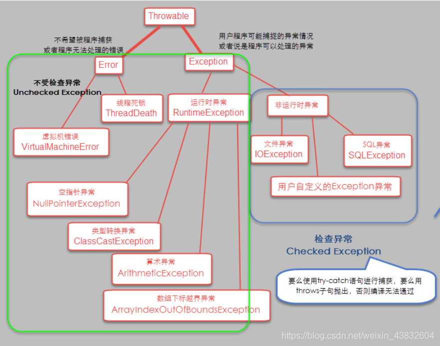

前言
资料为csdn收集整理，仅自用
基础
String
String的replace与replaceall区别？
答案
- replace：替换字符串- replaceAll：根据正则表达式替换字符串
String, StringBuffer, StringBuilder区别
答案
首先总结三者的不同1.基本区别
String的对象不可变，StringBuffer和StringBuilder的对象是可变的
2.性能区别
三者中StringBuilder执行速度最佳，StringBuffer次之，String的执行速度最慢（String为字符串常量，而StringBuilder和StringBuffer均为字符串变量，String对象一旦创建后该对象是不可更改的，后两者的对象是变量是可以更改的）
3.安全区别
String、StringBuffer是线程安全的，StringBuilder是线程不安全的（所以如果程序是单线程的使用StringBuilder效率高，如果是多线程使用StringBuffer或者String）
其次总结下这三者的相同：
1.三者在java中都是用来处理字符串的
2.三个类都被final修饰，因此都是不可继承的
3.StringBuilder与StringBuffer有公共父类AbstractStringBuilder(抽象类)
intern方法及String对象数目
1 | //根据下面代码判断输出结果 |
答案
falsetrue
false
true
false
题目
以下语句创建多少个对象？
String s = “abc” + new String(“def”);
答案以及解析
答案：创建4个String对象分析：JVM先在String池中创建2个String对象存储"abc"和"def"，遇到new关键字，再在内存堆上创建1个String对象存储"def"，其char value[]则指向常量池中的char value[]；两个字符串相加会在堆上创建1个String对象"abcdef"。（因为没有显式使用双引号指定，也没有调用intern，所以字符串池里边目前没有“abcdef”对象）
如何修改String对象的数据？
答案
不可变的含义是内部数据不可变，而不是说引用不可变。String类使用char value[]来存字符数据，它的类型为：private final char value[];
看上去它是不可更改的，因为是final类型。注意：final只是表示不能指向其他地址，它里边的内容是可以更改的。
结论：String是可以更改的，使用反射，value.setAccessible(true)，然后修改它即可。
Static
static的5种用法
答案
1. 修饰静态属性；2. 修饰静态方法；
3. 修饰静态内部类；
4. 静态导包（类或者方法，可以通配）；
5. 标记静态代码块。
为什么静态方法不能调用非静态方法和变量？
答案
与类加载顺序有关，加载静态方法时，非静态的未初始化。synchronized用于静态方法与普通方法有区别吗？
答案
synchronized修饰普通方法时用的锁是this，即以当前对象为锁。用static修饰的同步函数使用的锁为Saler.class。即当前类为锁。这是由于static修饰的方法在进行类加载时不一定在堆内存中产生类的实例对象，但一定会有该类的的字节码文件对象所以用static修饰的同步函数使用的锁是类名.class。异常
异常类型

catch里return了，finally是否执行？
答案
finally一定会执行try-catch-finally中return的执行情况：
1. 在try中没有异常的情况下try、catch、finally的执行顺序 try --- finally
2. 如果try中有异常，执行顺序是try --- catch --- finally
3. 如果try中没有异常并且try中有return这时候正常执行顺序是try ---- finally --- return
4. 如果try中有异常并且try中有return这时候正常执行顺序是try----catch---finally--- return
IO
字节流与字符流区别？
| *项* | *字节流* | *字符流* |
|---|---|---|
| *是否使用缓冲* | 否 | 是。若频繁对一个资源进行IO操作，会先把需要操作的数据暂时放入内存中，以后直接从内存中读取数据。这样可以避免多次的IO操作，提高效率。 |
| *存在位置* | 可存在于文件、内存中。硬盘上的所有文件都是以字节形式存在的。 | 只存在于内存中。 |
| *使用场景* | 适合操作文本文件之外的文件。例：图片、音频、视频。 | 适合操作文本文件时使用。（效率高。因为有缓存） |
| *Java相关类* | InputStream、OutputStream | Reader、Writer |
BIO, NIO, AIO 区别？
| *项* | *BIO (Block IO)* | *NIO (New IO)* | *AIO(Asynchronous I/O)* |
|---|---|---|---|
| *JDK版本* | 所有版本 | JDK1.4及之后 | JDK1.7及之后 |
| *异步/阻塞* | 同步阻塞****一个连接一个线程。****线程发起IO请求，不管内核是否准备好IO操作，从发起请求起，线程一直阻塞，直到操作完成。 数据的读取写入必须阻塞在一个线程内等待其完成。 | 同步阻塞/非阻塞****一个请求一个线程****。客户端发送的连接请求都会注册到多路复用器上，多路复用器轮询到连接有I/O请求时才启动一个线程进行处理。用户进程也需要时不时的询问IO操作是否就绪，这要求用户进程不停的去询问。 | 异步非阻塞。*一个有效请求一个线程*。用户进程只需要发起一个IO操作然后立即返回，等IO操作真正的完成以后，应用程序会得到IO操作完成的通知，此时用户进程只需要对数据进行处理就好了，不需要进行实际的IO读写操作，因为真正的IO读取或者写入操作已经由内核完成了。 |
| *使用场景* | 适用于连接数目多且连接比较短（轻操作）的操作。例如：聊天服务器。 | 适用于连接数目多且连接比较长（重操作）的架构。例如：相册服务器。 |
JDK8
JDK8新特性
答案
接口允许default和static；lambda；stream；时间新API（LocalDateTime等）CompletableFuture；等JDK8接口的default和static
1 | public interface InterfaceDemo { |
一、default
default说白了就是提供接口的默认实现，这样我们的实现类就不一定需要全部实现接口中的方法，一些常规通用的方法实现可以直接在接口层面提前处理，当然你想覆盖也是可以的。（有点抽象类的意思）
二、static
static就是常规的静态方法，允许通过接口直接调用，不能通过实现类去调用，跟普通的类的静态方法一样的用法。
JDK8 Stream API 流操作包括哪些部分？项目中怎么用的Stream？
答案
Stream操作步骤创建Stream=> 转换Stream（中间操作）=> 产生结果（终止操作）
注意：这只是一般操作。实际编程时，创建必须有，而中间操作与终止操作是可选的。
`Stream` 流可以通过集合和数组进行创建！
1、通过 `java.util.Collection.stream()` 方法用集合创建流
2、使用 `java.util.Arrays.stream(T[] array)` 方法用数组创建流
3、使用Stream的静态方法：`of()、iterate()、generate()`